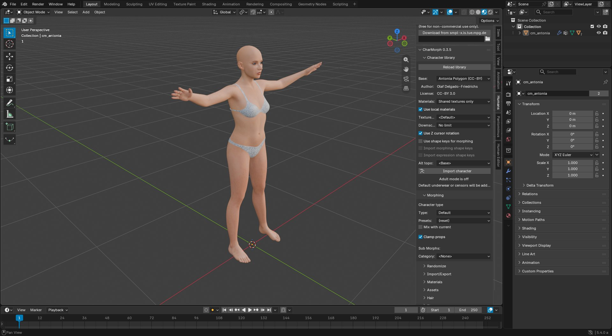

Your first person
Press N in the 3D Viewport and open the Humans tab. In CharMorph, pick a base (MB-Lab female or male, Antonia, Reom) and press Import character, then shape them with the Morphing sliders. In MB-Lab, pick a character and press Create. SMPL-X bodies need the model files from smpl-x.is.tue.mpg.de (free for non-commercial use); set their folder once in Preferences.
Minimum requirements
| System | Windows 10 or 11, 64-bit (Linux builds from source) |
|---|---|
| Processor | 64-bit, 4 cores, with SSE4.2 |
| Memory | 8 GB RAM (16 GB for big scenes and 8K skin textures) |
| Graphics | a card with OpenGL 4.3 or Vulkan 1.2 and 2 GB of video memory |
| Disk | 3 GB, plus your projects |